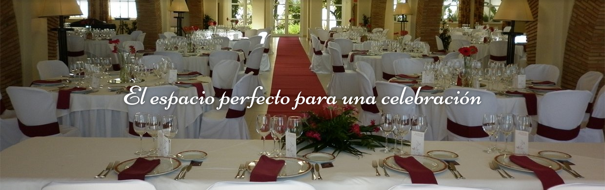
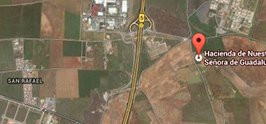

HACIENDA
Hacienda del Siglo XVIII situada en Sevilla, que principalmente se había destiando al cultivo del olivar.
LEER MÁSBODAS

El mejor enclave para la celebración de tu boda. Reformada para acoger tu boda con las mayores comodidades.
LEER MÁSEVENTOS

Preparada para albergar cualquier evento importante: Reuniones de empresa, Bodas, Bautizos, fiestas y celebraciones.
LEER MÁSCOMO LLEGAR
Situada a 4km de Sevilla, posee un amplio patio de limoneros y jardines ideal para los aperitivos de tu boda al aire libre.
LEER MÁS